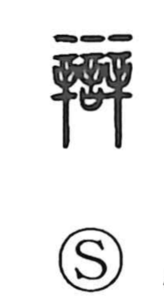

弁

Uncategorized
Kun: wakimaeru | On: ben
to argue ・ debate ・ speech ・ eloquence ・ to distinguish ・ to judge
Explanation
Shirakawa traces this character to the older form 辯, a picto‑phonetic built from two 辛 set side by side above 言. The graph 辛 depicts the tattooing needle of punitive oaths; doubled, it evokes the accuser and the accused facing one another under the same ordeal, swearing before the gods. The 言 below are the solemn words of that oath. From this courtroom‑oath scene the character came to signify contesting a case, debate, and skill in speech, then by extension the settling of disputes; in use it also stands in place of 辨 with the sense of judging and distinguishing.